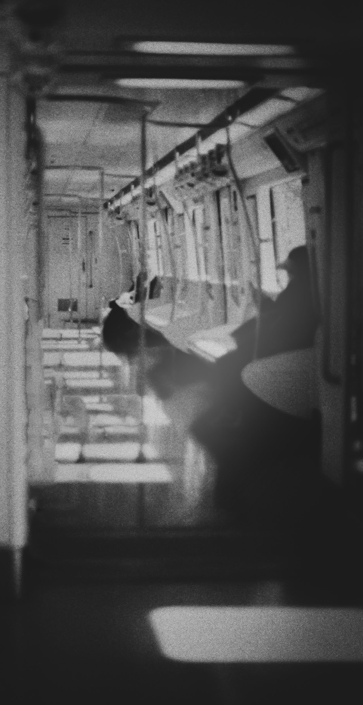
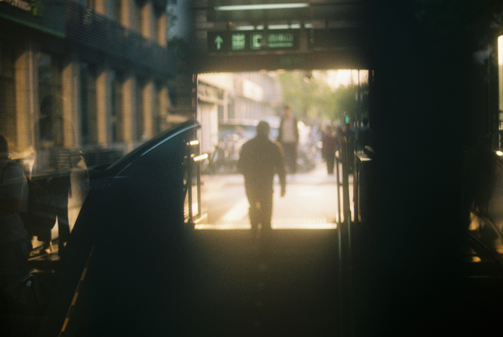
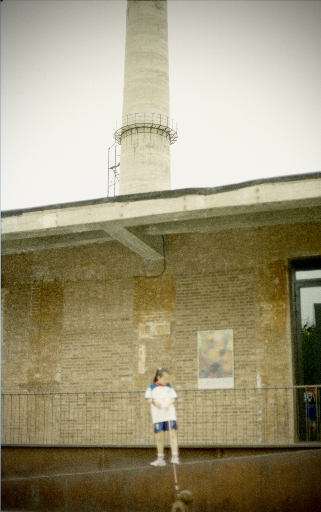

←
返回首页
EN / 中
Mode
旅行日记 / 胶片随档
胶片摄影
Beijing, 2025 / HW
Osaka, 2025 / Vending Machine
Kyoto, 2025 / Room
Beijing, 2025 / HW
Beijing, 2025 / HW
Beijing, 2025 / HW
Beijing, 2025 / Gulou

Beijing, 2025 / Tube

Highlight: Beijing, 2025 / Tube Interior
Highlight: Beijing, 2025 / Tiaohai Moment

Highlight: Beijing, 2025 / 798 Art District